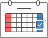

“就活”に困ったら
行ってみよう!!
新卒就活相談所 メイロ｜自分らしい働き方を見つけませんか？
無料音声配信中 !
ABOUT
メイロとは？
みんなどうやって
就活しているのか
謎なことが多すぎる！！
就職活動で
「なんか思っていたようにいかない」
「なんか難しくてうまくいかない」
そんな風に感じることはありませんか?
メイロは、
同じように悩む人たちと出会い、
話をしたり聞いたりしながら、
迷路の中でも「名路」
（自分にとってのいい道や、
そこに向かうためのヒントの意味）
を一緒に見つけていく場所です
＃就活なにもしてない
#スケ管むずい
#社不
#働ける自信ない
#GD拒否
#バ先で怒られる日常
#遅刻魔
#自己分析が終わらない
#就活やめたい
#何が向いているかわからない
#ES書けない
#就活ぼっち
TROUBLE
こんなお悩み
ありませんか？
就活や学生生活が
うまくいっていない
友達には打ち明けにくい
困りごとや悩みがある
相談できる友達が
周りにいない
将来や仕事に関して
大丈夫か不安
ACTIVITIES
メイロで
やっていること
困りごとや悩みを話せる雑談
就職に関する疑問·質問解消会
履歴書・ES添削や面接練習
音声無料配信＆マシュマロ質問箱
PARTICIPATION
参加について
完全参加無料！
入退室自由！

毎月第3土曜日
オンラインOK！
atGPジョブトレIT・Web 船橋
千葉県船橋市本町3丁目32-20
東信船橋ビル 2階
JR船橋駅 / 京成船橋駅 徒歩約10分
Q&A
よくある質問
-
Q
参加するにはどうしたらいいですか？
-
A
申し込みフォームから事前に参加受付をお願いします。
-
Q
誰でも参加ができますか？
-
A
メイロは困りごとを持つ人たちの居場所です。
障害や診断の有無に関わらずどなたでも参加できます。
事業所名にIT·Webと記載がありますが、所属している学部や希望職種も問いません。
運営
株式会社ゼネラルパートナーズ
atGPジョブトレIT·Web船橋
atGPジョブトレIT·Web船橋は、精神疾患や障害を持つ方、グレーゾーンの方をはじめ、働く上でなんらかの困難さを持つ方の就労支援を行っている機関(就労移行支援事業所)です。
学校に在籍しながらの利用も可能(お住まいの自治体により条件あり)であり、就職活動や就職後も安心して働き続けられるよう職場定着の支援も行っています。毎年多くの利用者さんがご自身の次の一歩を踏み出して進まれています。